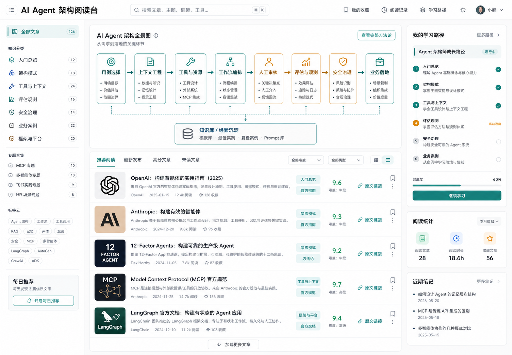

AI Agent 架构阅读台
把 Agent 入门、架构模式、工具调用、上下文工程、评估、安全和业务案例放到一个可检索、可标记、可复盘的在线网页里。
Agent 学习地图
从“会用 AI”到“能架构业务 Agent”
这里收纳了 40+ 个已整理来源。公开网页不会整篇转载原文，而是提供阅读摘要、学习用途、重点问题和原文入口，方便你系统理解怎么做一个好的 Agent。

给第一次来的你
先走完这 3 站，再决定要不要深挖
不用一次读完全部资料。先建立判断标准，再理解工具和上下文，最后完成一个小实践；每一站完成后再进入下一站。
-
01
先建立判断
什么任务才真的需要 Agent？
先分清聊天机器人、自动化工作流和 Agent，避免为了“智能”而把简单问题做复杂。
-
02
再理解能力边界
工具和上下文为什么决定效果？
先看 Agent 怎样获取资料、调用工具和接收错误反馈，不必急着研究复杂编排。
-
03
最后做一次小实践
跑通第一个可验证的小任务
用官方最小示例完成一次调用，再回来看框架、记忆和多 Agent，理解会扎实很多。
精选合集
按学习目标打包阅读
原文链接
全部资料 当前显示 0 / 总计 0
学习路线
从入门到可交付 Agent
边界说明
公开阅读页的内容边界
不做全文搬运
这个站点只提供阅读笔记、短摘要、课程关联和原文入口。受版权保护的文章请跳转原站阅读。
高风险动作保留人工审核
AI 可以辅助检索、摘要、工具调用和状态推进，但涉及权限、资金、候选人、客户承诺等关键动作应由人负责。
资料状态透明
已经深读和只是候选的资料会分开标注，避免把未验证信息当作课程结论。
继续深读